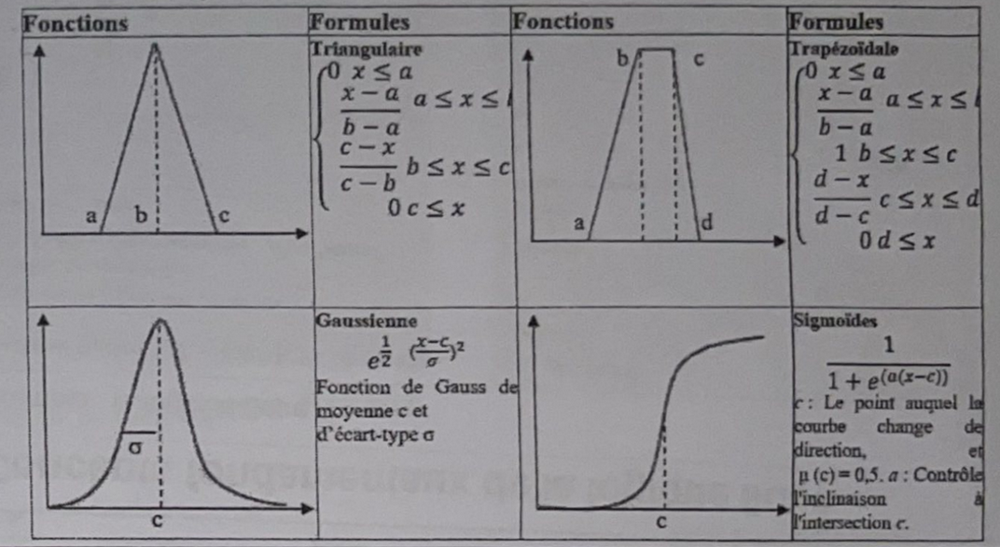

I. Fuzzy Logic
Classic Sets vs. Fuzzy Sets
Classic Sets (Ensembles classiques): In traditional logic, an item completely belongs to a group (a value of 1) or it doesn't belong at all (a value of 0).
Fuzzy Sets (Ensembles flous): Fuzzy logic allows for partial belonging. An item's membership can be any value in the interval [0, 1].
Basic Characteristics of Fuzzy Sets
- Support (Le support): Every item that belongs to the set even a tiny bit ($\mu_A(x) > 0$).
$$ \text{supp}(A) = \{x \in X, \mu_A(x) > 0\} $$
- Kernel (Le noyau): Only the items that perfectly and completely belong to the set ($\mu_A(x) = 1$).
$$ \text{Noyau}(A) = \{x \in X, \mu_A(x) = 1\} $$
- Height (La hauteur): The highest possible membership score that any item achieves in the whole set.
$$ H(A) = \sup_{x \in X} \mu_A(x) $$
- Alpha-cut ($\alpha$-Coupe): A filter that keeps items with a membership score above a specific threshold ($\alpha$).
$$ A_\alpha = \{x \in X, \mu_A(x) \geq \alpha\} $$
- Crossover point (Point de croisement): The exact point where an item is right in the middle, with a score of exactly 0.5.
- Normalized fuzzy sets (Ensembles flous normalisés): A set is considered "normalized" if at least one item in it reaches a perfect score of 1.
$$ A \text{ est normalisé } \iff \exists x \in X, \mu_A(x) = 1 $$
- A fuzzy set is convex if and only if its $\alpha$-cuts are convex.


The Linguistic Variable
Fuzzy logic computes using everyday words instead of exact numbers to mimic human reasoning.
- Universe of discourse (L'univers du discours): The complete range of possible values for a given variable.
- Linguistic values (Valeurs linguistiques): The descriptive words used for different parts of that range (e.g., "cold" or "young").
- Membership function (Fonction d'appartenance): The mathematical shapes used to map these words to numbers (Triangular, Gaussian, Trapezoidal).

Fuzzy Logic Operators (Zadeh's Formalism)
When combining fuzzy sets, we use specific mathematical rules:
- Logical AND (ET logique): Represents the intersection by taking the smallest value: $\min(a, b)$.
- Logical OR (OU logique): Represents the union by taking the largest value: $\max(a, b)$.
- Logical NOT (NON logique): Represents the opposite (le complément), calculated as $1 - a$.


II. Inference Systems
1. Classic Inference Systems
These systems use strict Boolean logic (0=False, 1=True) to deduce conclusions.
- Knowledge Base (Base de connaissances): Comprises the Database (known facts) and the Rule Base (IF-THEN rules).
- Inference Engine (Moteur d'inférence): Searches for and applies rules to data.
- Methods: Forward Chaining (Facts → Conclusion) and Backward Chaining (Goal → Facts).
- Pros & Cons: Simple, fast, but cannot handle uncertainty and has abrupt boundaries.

2. Fuzzy Inference Systems (FIS)
Handle uncertainty by using linguistic variables instead of strict 0s and 1s. Formally defined by (X, Y, F, R, M).
- Fuzzification: Converting a precise number into a membership degree.
- Inference: Applying linguistic rules (e.g., "IF Temp is Cold THEN Fan is Slow").
- Defuzzification: Converting the final fuzzy result back into a precise number.

3. Fuzzy Inference Models
- Mamdani Model (Le modèle Mamdani): The conclusion of each rule is a fuzzy set. Defuzzification uses the weighted average of the centers:
$$ z = \frac{\sum (w_i \cdot C_i)}{\sum w_i} $$($w_i$ = rule activation degree, $C_i$ = center of output triangle).
- Sugeno Model (Le modèle Sugeno): The conclusion is a strict mathematical function, great for optimization.
$$ z = \frac{\sum (w_i \cdot z_i)}{\sum w_i} $$
- Tsukamoto Model (Modèle Tsukamoto): Output sets must be strictly monotonic. Output is calculated using specific values on the curve.
III. Fuzzy Clustering
Review: Classic / Hard Clustering
Data points belong to exactly one cluster. $u_{ij} \in \{0, 1\}$.
Limitations: Forces abrupt assignments, causes information loss, and is sensitive to noise.
Mathematical Formalism
A single data point can belong to multiple clusters at the same time based on a membership degree.
- Constraints:
$$ 0 \leq u_{ij} \leq 1 \quad \text{and} \quad \sum_{j=1}^{c} u_{ij} = 1 $$
- FCM Objective Function:
$$ J_m = \sum_{i=1}^{n}\sum_{j=1}^{c} u_{ij}^m ||x_i - c_j||^2 $$Where $m$ is the fuzziness coefficient.
FCM Algorithm Steps
- Initialize membership matrix $U$.
- Calculate Centers:
$$ c_j = \frac{\sum_{i=1}^{n} u_{ij}^m x_i}{\sum_{i=1}^{n} u_{ij}^m} $$
- Update Memberships:
$$ u_{ij} = \frac{1}{\sum_{k=1}^{c} \left( \frac{||x_i - c_j||}{||x_i - c_k||} \right)^{\frac{2}{m-1}}} $$
- Repeat until convergence (difference $< \epsilon$).
FCM Python Implementation
import numpy as np
# --- 1. DATA INITIALIZATION ---
X = np.array([1, 2, 5, 8], dtype=float)
n = len(X)
c = 2 # Number of clusters
m = 2 # Fuzziness parameter
epsilon = 0.1 # Stopping criteria
max_iter = 100
# Initial membership matrix
U = np.array([
[0.8, 0.2],
[0.7, 0.3],
[0.3, 0.7],
[0.2, 0.8]
], dtype=float)
# --- 2. MATH FUNCTIONS ---
def calcul_centres(X, U, m):
um = U ** m
# Weighted average
centres = (um.T @ X) / np.sum(um.T, axis=1)
return centres
def update_U(X, centres, m):
n, c = len(X), len(centres)
U_new = np.zeros((n, c))
for i in range(n):
for j in range(c):
somme = 0
for k in range(c):
d1 = abs(X[i] - centres[j])
d2 = abs(X[i] - centres[k])
if d2 == 0:
d2 = 1e-6
somme += (d1 / d2) ** (2 / (m - 1))
U_new[i, j] = 1 / somme
return U_new
# --- 3. ALGORITHM LOOP ---
iteration = 0
while iteration < max_iter:
iteration += 1
centres = calcul_centres(X, U, m)
U_new = update_U(X, centres, m)
if np.linalg.norm(U_new - U) < epsilon:
break
U = U_newIV. Adaptive Neuro-Fuzzy Inference System (ANFIS)
Why ANFIS?
Standard Neural Networks (ANN) are powerful but act as a "black box" that cannot explain decisions. Standard Fuzzy Logic is interpretable but requires manual rule creation. ANFIS combines both: it learns parameters automatically from data while generating clear, interpretable IF-THEN rules.
Architecture (The 5 Layers)
- Layer 1 (Fuzzification): Calculates membership degree.
- Layer 2 (Rule Activation): Multiplies inputs to find the activation strength of the rule.
- Layer 3 (Normalization): Calculates the relative weight of the rule.
- Layer 4 (Rule Output): Applies the mathematical Sugeno function.
- Layer 5 (Final Output): Calculates final global output (Defuzzification).
Comparison & Applications
ANN vs ANFIS: ANN says "I predict, but I cannot explain", whereas ANFIS says "I predict AND I explain using rules".
Pros & Cons: Highly precise and explainable, but computationally expensive and sensitive to data.
Example (Credit Risk): "IF income is low AND debt is high THEN credit = refused". Used in finance, medical diagnosis, smart grids, robotics, and XAI.
V. Fuzzy Quantifiers
Why use them?
Why use them? (Pourquoi les utiliser ?) Classic rules (like "IF CPU is high") are too rigid and lack explanation. Quantifiers (like "IF most indicators are high") make the rules much more natural, flexible, and interpretable.
Formal Definition (Définition formelle): A fuzzy quantifier is a mathematical function that takes a satisfied proportion ($p$) and converts it into a degree of truth ($Q(p)$).
Mathematical Example
To calculate the exact degree of truth for the word "most" (la plupart), we use this function:
Interpretation: If less than 50% of conditions are met, "most" is 0% true. Once you pass 50%, the truth degree scales up progressively until it hits 100% truth at $p=1$.
Types of Fuzzy Quantifiers
- Monotonic (Quantificateurs monotones): Functions that only go in one direction (strictly increasing like "a lot" or strictly decreasing like "few"). Logically coherent, but cannot cover specific target concepts.

- Non-monotonic (Quantificateurs non monotones): Functions centered on a specific target value, using triangular or Gaussian shapes (e.g., "about 5"). Great for precise concepts.

- Regular (Quantificateurs réguliers de Zadeh): These must strictly start at zero and end at exactly one ($Q(0)=0$ and $Q(1)=1$). Examples: "most", "a lot".

- Non-regular (Quantificateurs non réguliers): Do not respect Zadeh's strict boundaries. Flexible for real-world situations.

- Linguistic (Quantificateurs linguistiques flous): Natural language expressions modeled directly by fuzzy functions. Extremely natural but highly subjective.